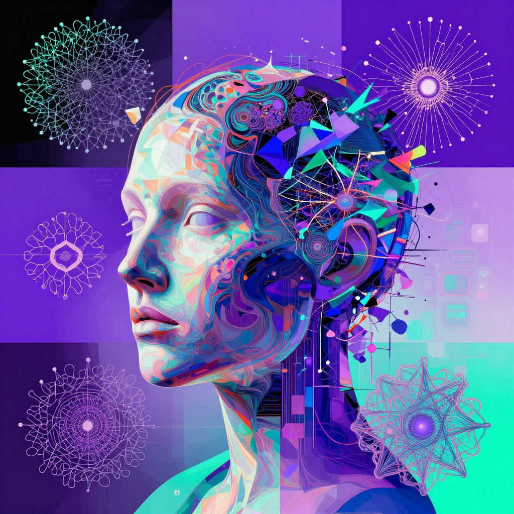

Best AI Art Generator 2026: Top 8 Tools for Digital Art

Create Stunning Digital Art with AI
AI art generators have transformed digital creativity. Whether you are a professional artist, designer, or hobbyist, these tools can produce breathtaking artwork from text descriptions. We tested the top AI art generators to find the best for every style and skill level.
| Tool | Best For | Price | Art Quality | Control |
|---|---|---|---|---|
| Midjourney | Artistic & creative | $10/mo+ | 10/10 | 8/10 |
| DALL-E 3 | Prompt accuracy | $20/mo (ChatGPT) | 8.5/10 | 7/10 |
| Stable Diffusion | Open-source & free | Free | 8.5/10 | 10/10 |
| Flux Pro | Photorealism | Pay-per-image | 9.5/10 | 8/10 |
| Ideogram | Text in images | Free / $8/mo | 8/10 | 7.5/10 |
| Leonardo AI | Game assets & design | Free / $12/mo | 8.5/10 | 9/10 |
| NightCafe | Community & styles | Free / $6/mo | 8/10 | 7/10 |
| Adobe Firefly | Commercial safety | Free / $5/mo | 8/10 | 8/10 |
Midjourney — Best for Artistic Quality
Midjourney consistently produces the most visually stunning AI artwork. Its unique aesthetic blend of photorealism and artistic expression makes it the top choice for digital artists. See our full Midjourney review.
Stable Diffusion — Best Free Option
Stable Diffusion is the leading open-source AI art generator. Running locally on your own hardware, it offers unlimited free generation with complete control over every parameter. The community has created thousands of custom models and LoRAs.
Flux Pro — Best for Photorealism
Flux Pro produces the most photorealistic AI images available. If you need images that look like genuine photographs, Flux Pro is the clear winner.
Best Free AI Art Generators
- Stable Diffusion — Free, open-source, unlimited local generation
- Microsoft Copilot — Free DALL-E 3 access via Bing
- Ideogram Free — Limited daily generations
- Leonardo AI Free — 150 daily tokens
- NightCafe Free — Daily free credits
🎁 Free AI Tools Guide 2026
Download our free guide with 50+ AI tool comparisons, pricing, and recommendations.
Download Free Guide →📖 Related Articles
Pros & Cons at a Glance
Midjourney
✅ Pros
• Stunning artistic quality
• Active community
• Style versatility
❌ Cons
• Discord interface
• No free tier
• Learning curve
DALL-E 3
✅ Pros
• Best text rendering
• Free via ChatGPT
• Easy prompts
❌ Cons
• Less artistic
• Limited generations
• Content restrictions
Stable Diffusion
✅ Pros
• Free and open source
• Local processing
• LoRA customization
❌ Cons
• Requires GPU
• Complex setup
• Inconsistent quality
Leonardo AI
✅ Pros
• Free daily credits
• Great UI
• Multiple models
❌ Cons
• Credit system
• Output watermarks
• Newer platform
NightCafe
✅ Pros
• Free daily credits
• Community challenges
• Multiple AI models
❌ Cons
• Credit system
• Ads on free tier
• Limited commercial use
Frequently Asked Questions
What is the best AI art generator?
Midjourney is the best AI art generator for artistic quality and style versatility. DALL-E 3 is best for ease of use and text rendering. Stable Diffusion is best for free, open-source generation with full customization.
Can I use AI art commercially?
Yes, most paid AI art tools grant commercial usage rights. Midjourney paid plans include commercial rights. DALL-E 3 through ChatGPT Plus allows commercial use. Stable Diffusion is open source with no restrictions. Always check each tools specific terms.
Is AI art really art?
AI art is a creative tool that requires human direction through prompts and curation. The artistic value comes from the humans vision, composition choices, and creative intent. Many artists use AI as part of their creative workflow alongside traditional techniques.
How do I get better AI art results?
Write detailed prompts specifying style, subject, lighting, composition, and mood. Use negative prompts to exclude unwanted elements. Iterate on your prompts based on results. Study community galleries for prompt inspiration and learn tool-specific parameters.
What is the difference between Midjourney and DALL-E?
Midjourney produces more artistic, painterly results with better aesthetic quality. DALL-E 3 follows prompts more precisely and renders text better. Midjourney costs $10/month minimum and uses Discord, while DALL-E 3 is accessible through free ChatGPT.
Start Creating AI Art
Try the best AI art generators today.
Read Midjourney Review Compare All Image AI